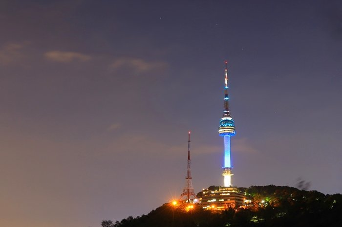

| Seoul is the capital and the largest city of South Korea. The population is 9.776 million. The area of Seoul is 605.2 km² which is a pretty large city. |
| If this is your first time going to Seoul and you have no idea where to go or what to eat, this is a perfect website for you! In this website I will include the tips that can help you when you are traveling in Seoul, Korea with foods to eat and places that you can visit. |
So now I am going to start introducing you to the places you can visit in Soeul: